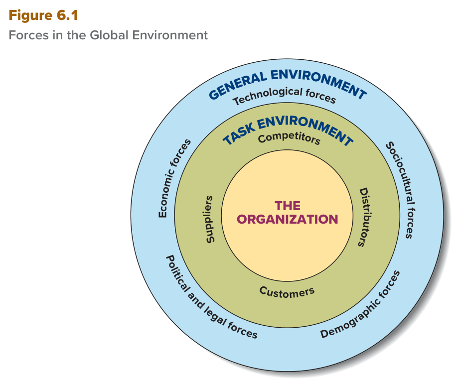
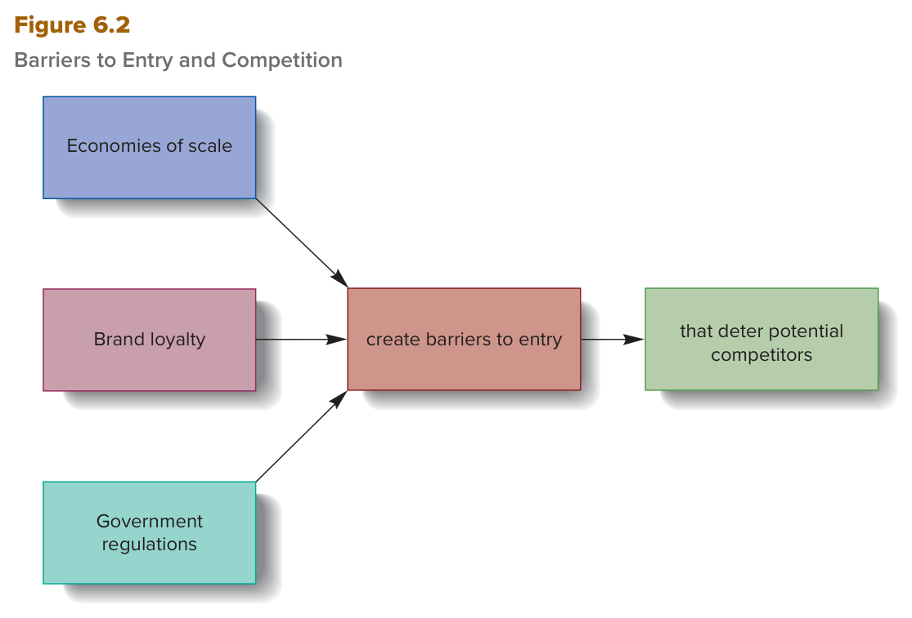

MGT 102 · Chapter 6 · القسم ١ من ٤:
The Global Environment and the Task Environment
الهدف LO6-1: Explain why the ability to perceive, interpret, and respond appropriately to the global environment is crucial for managerial success.
الهدف LO6-2: Differentiate between the global task and global general environments.
الهدف LO6-3: Identify the main forces in the global task and general environments, and describe the challenges that each force presents to managers.
هذا أول درس في الفصل السادس، والفصل كله مبني على فكرة وحدة: برّا حدود أي منظمة فيه قوى تتغيّر باستمرار
وتجيب فرص (opportunities) وتهديدات (threats)، والمدير الناجح هو اللي يشوفها ويفهمها
ويرد عليها صح (LO6-1). الكتاب يقسم هالبيئة العالمية (global environment) لدايرتين: دايرة
قريبة (task environment) فيها ٤ قوى بس، ودايرة أوسع (general environment) فيها
٥ قوى (LO6-2). وبعدها يفصّل الدايرة القريبة كلها: المورّدين، الموزّعين، الزبائن،
والمنافسين مع حواجز الدخول (LO6-3). القوى الخمس للبيئة العامة تجيك بالتفصيل في الدرس الجاي.
ركّز من الحين على خمس أشياء تطيّح الطلاب هنا: (١) global ضد general — الأولى الكل والثانية جزء منها، (٢) أي قوة في أي دايرة (suppliers = مهمة، demographic = عامة) — وهذا Figure 6.1، (٣) شرطين قوة المورّد (مصدر وحيد + مدخل حيوي) ومعنى global outsourcing، (٤) competitors ضد potential competitors، (٥) المصادر الثلاثة لحواجز الدخول — وهذا Figure 6.2. والتعاريف الإنجليزية خذها حرفية من الجداول وصناديق EXAM BOX.
وش يغطي الفصل كله (من مقدمة الكتاب):
| المصطلح | التعريف بالإنجليزي (احفظه حرفي) | بالعربي |
|---|---|---|
| Global organizations المنظمات العالمية |
Organizations that operate and compete in more than one country. | منظمات تشتغل وتنافس في أكثر من دولة وحدة. |
| Global environment البيئة العالمية |
The set of global forces and conditions that operates beyond an organization's boundaries but affects a manager's ability to acquire and utilize resources. | مجموعة القوى والظروف العالمية اللي تشتغل برّا حدود المنظمة بس تأثّر على قدرة المدير إنه يحصّل الموارد ويستخدمها. |
انتبه: الكتاب يكتب تعريف global environment بثلاث صيغ، والمعنى واحد: (١) الهامش (اللي فوق)، (٢) المتن: a set of forces and conditions in the world outside an organization's boundary that affects how it operates and shapes its behavior — وهي نفس صيغة الملزمة، (٣) Summary and Review: …affects a manager's ability to acquire and use resources. المفتاح في الثلاث: برّا الحدود + يأثّر.
| # | فرص opportunities | تهديدات threats |
|---|---|---|
| ١ | تقنية إنتاج جديدة كفؤة efficient new production technology | ظهور منافسين عالميين جدد rise of new global competitors |
| ٢ | توفّر قطع أرخص availability of lower-cost components | ركود اقتصادي عالمي global economic recession |
| ٣ | فتح أسواق عالمية جديدة opening of new global markets | نقص النفط oil shortage |
LO6-1 كلها هنا: قدرة المدير إنه يفهم قوى البيئة العالمية ويرد عليها صح =
عوامل حرجة تأثّر على أداء المنظمة (critical factors affecting organizational performance)،
ومثال الكتاب: قدرة BMW إنها تصنع وتبيع سيارات يبيها الزبائن في كل العالم.ليش الإطار مهم؟ يوريك قوى البيئة العالمية على أرض الواقع: زبائن جدد في الصين (فرصة)، رسوم جمركية وقوانين ملكية (قوى سياسية وقانونية — درس ٢)، وjoint venture (طريقة توسّع — درس ٣).
Managers of companies large and small have found that to survive and prosper in the 21st century, most organizations must become global organizations that operate and compete not only domestically, at home, but also globally, in countries around the world. Operating in the global environment is uncertain and unpredictable because it is complex and changes constantly.
The global environment is a set of forces and conditions in the world outside an organization's boundary that affects how it operates and shapes its behavior. These forces change over time and thus present managers with opportunities and threats.
The ability of managers to understand forces in the global environment and to respond appropriately to those forces, such as BMW's ability to make and sell vehicles that customers around the world want to buy, are critical factors affecting organizational performance.
الكتاب يقول: عشان المدير يحدّد الفرص والتهديدات، يفيده إنه يفرّق بين task environment والبيئة الأشمل (the more encompassing general environment).
| المصطلح | التعريف بالإنجليزي (احفظه حرفي) | بالعربي |
|---|---|---|
| Task environment بيئة المهمة |
The set of forces and conditions that originates with suppliers, distributors, customers, and competitors and affects an organization's ability to obtain inputs used to manufacture and sell its products or services. | القوى والظروف اللي مصدرها المورّدين والموزّعين والزبائن والمنافسين، وتأثّر على قدرة المنظمة تحصّل المدخلات اللي تصنع وتبيع فيها منتجاتها أو خدماتها. |
| General environment البيئة العامة |
The wide-ranging global, economic, technological, sociocultural, demographic, political, and legal forces that affect an organization and its task environment. | القوى الواسعة — العالمية والاقتصادية والتقنية والاجتماعية الثقافية والديموغرافية والسياسية والقانونية — اللي تأثّر على المنظمة وعلى بيئة مهمتها. |
LO6-2 بالضبط)
| Task environment | General environment | |
|---|---|---|
| كم قوة؟ | ٤: suppliers · distributors · customers · competitors | ٥: economic · technological · sociocultural · demographic · political and legal |
| من وين تجي؟ | من أفعال الموردين والموزعين والزبائن والمنافسين — في الداخل والخارج (both at home and abroad) | قوى واسعة (wide-ranging) عالمية |
| على مين تأثّر؟ | قدرة المنظمة تحصّل مدخلاتها وتصنع وتبيع | المنظمة وبيئة مهمتها (and its task environment) |
| نوع الأثر | الأكثر فورية ومباشرة (most immediate and direct effect) — تضغط وتأثّر على المدير يومياً | تغيّراتها ممكن يكون لها أثر كبير (major impacts) على المدير والمنظمة |
| سهولة تشوفها | أسهل | الفرص والتهديدات منها غالباً أصعب تحدّدها وترد عليها (more difficult to identify and respond to) |
| القرارات | تأثّر daily, weekly, and monthly ← أثر كبير على القرارات قصيرة المدى (short-term decision making) | — (تفاصيلها في درس ٢) |

هذا هو Figure 6.1 في الكتاب (ص ١٥٥). هو ثلاث دواير داخل بعض: في النص (الأصفر) THE ORGANIZATION، حولها حلقة وسطى (الزيتي) عنوانها TASK ENVIRONMENT وفيها ٤ قوى: Competitors فوق، Distributors يمين، Customers تحت، Suppliers يسار. وبرّاها حلقة خارجية (الأزرق) عنوانها GENERAL ENVIRONMENT وفيها ٥ قوى: Technological forces فوق، Sociocultural forces يمين، Demographic forces تحت يمين، Political and legal forces تحت يسار، Economic forces يسار. كيف تقرأه: الحلقة الخارجية تحيط بالوسطى، يعني البيئة العامة تأثّر على المنظمة وعلى بيئة مهمتها. ولاحظ إن قوى العامة كلها مكتوب بعدها كلمة forces، وقوى المهمة أسماء ناس وشركات تتعامل معهم. وPolitical and legal مكتوبة قوة وحدة — عشان كذا العدد ٥ مو ٦. وش يجي منه بالاختبار: «أي من هذي في task environment؟» بخيارات مخلوطة من الحلقتين، «كم قوة في كل حلقة؟» (٤ و٥)، «وش اللي في النص؟»، أو يعطيك الشكل ناقص ويطلب تكمّله.
وملخّص الكتاب آخر الفصل (Summary and Review) يقولها بجملتين: البيئة العالمية لها مكوّنين (two components): task وgeneral. والفرص والتهديدات في بيئة المهمة تصير أعقد لما الشركة تتوسّع عالمياً — بدل مورّد واحد وزبون واحد ومنافس واحد، صار عندك منهم في كل دولة تدخلها.
To identify opportunities and threats caused by forces in the environment, it is helpful for managers to distinguish between the task environment and the more encompassing general environment (see Figure 6.1).
The task environment contains the forces that have the most immediate and direct effect on managers because they pressure and influence managers daily.
The general environment includes the wide-ranging global, economic, technological, sociocultural, demographic, political, and legal forces that affect the organization and its task environment. For the individual manager, opportunities and threats resulting from changes in the general environment are often more difficult to identify and respond to than are events in the task environment.
Forces in the task environment result from the actions of suppliers, distributors, customers, and competitors both at home and abroad (see Figure 6.1). These four groups affect a manager's ability to obtain resources and dispose of outputs daily, weekly, and monthly and thus have a significant impact on short-term decision making.
The global environment has two components: the task environment and the general environment. The opportunities and threats associated with forces in the task environment become more complex as a company expands globally.
| المصطلح | التعريف بالإنجليزي (احفظه حرفي) | بالعربي |
|---|---|---|
| Suppliers المورّدين |
Individuals and organizations that provide an organization with the input resources it needs to produce goods and services. | أفراد ومنظمات يعطون المنظمة موارد المدخلات اللي تحتاجها عشان تنتج سلع وخدمات. |
المدخلات (input resources) زي مواد خام (raw materials)، قطع (component parts)، أو حتى موظفين (employees) — والمورّد ياخذ مقابلها فلوس (payment). ومن أهم شغل المدير إنه يضمن إمداد موثوق من المدخلات (a reliable supply of input resources). ومثال الكتاب Dell Technologies:
| نوع المورّد | مين؟ |
|---|---|
| المعالجات microprocessors | Intel |
| الأقراص disk drives | Nvidia وAMD |
| البرامج المثبّتة مسبقاً (أنظمة التشغيل والتطبيقات) preinstalled software | Microsoft وAdobe |
| مزوّدين رأس المال providers of capital | البنوك والمؤسسات المالية — الكتاب يسمّيهم key suppliers |
| مورّدين العمالة suppliers of labor | (١) المؤسسات التعليمية اللي تدرّب موظفين المستقبل فتعطي عمّال مهرة، (٢) النقابات العمالية trade unions |
Trade unions = منظمات تمثّل مصالح الموظفين وتقدر تتحكّم في عرض العمالة باستخدام حق العمّال المنتسبين في الإضراب (strike)، وتقدر تأثّر على شروط وظروف التوظيف. وفي الصناعات اللي النقابات فيها منتشرة، جزء مهم من شغل المدير هو التفاوض وإدارة الاتفاقيات مع النقابات وممثّليها.
التغيّرات في طبيعة أو عدد أو نوع المورّدين تجيب فرص وتهديدات. وأكبر تهديد: لما يكون الموقف التفاوضي (bargaining position) للمورّد قوي لدرجة يرفع أسعار مدخلاته. ويكون قوي بالذات لما يجتمع شرطين:
| # | قصة NutraSweet بالترتيب |
|---|---|
| ١ | G. D. Searle كانت المورّد الوحيد لـNutraSweet (المحلّي الصناعي في أغلب المشروبات الغازية الدايت) لمدة ١٧ سنة. |
| ٢ | مكوّن مهم وما له بديل مقبول — السكرين والمحلّيات الصناعية الثانية أثارت مخاوف صحية. |
| ٣ | السبب: Searle اخترعته وعندها براءة الاختراع (patent)، والبراءة تمنع غيرها يطرح منتج منافس ١٧ سنة. |
| ٤ | النتيجة: سعر عالي = ضعف سعر كمية مكافئة من السكر ← رفعت تكاليف Coca-Cola وPepsiCo. |
| ٥ | لما انتهت البراءة دخلت شركات كثيرة بمنتجات مشابهة والأسعار طاحت. |
| ٦ | في الألفينات Splenda (من McNeil Nutritionals) أخذت مكان NutraSweet، وسعر NutraSweet طاح أكثر، وصارت Splenda هي اللي تطلب سعر عالي. |
| ٧ | بعدين محلّي طبيعي من نبات stevia (صفر سعرات) دخل قبل أقل من عشر سنين وأخذ حصة سوقية، ومتوقّع سوقه العالمي أكثر من $1.6 billion في ٢٠٣٠. |
والعكس: لما المنظمة عندها موردين كثير لمدخل واحد، هي اللي موقفها قوي وتقدر تطلب مدخلات رخيصة وعالية الجودة، وتضغط عليهم ينزّلون أسعارهم — زي ما تسوي Dell وهي تدوّر دايم على مورّدين رخيصين برّا عشان أسعارها تبقى منافسة. وعالمياً المنظمة تقدر (١) تشتري من مورّدين برّا، أو (٢) تصير مورّد نفسها وتصنّع منتجاتها في الخارج.
| وش يقول الكتاب | |
|---|---|
| فرصة | الوصول لمنتجات رخيصة مصنوعة برّا = فرصة للشركات الأمريكية تخفّض تكاليف مدخلاتها. |
| تهديد ١ — العلامة brand | سيطرة أقل على الإنتاج اللي يسويه مقاولين بعيدين؛ لو سلّموا جودة رديئة = تهديد للعلامة التجارية. |
| تهديد ٢ — المسؤولية الاجتماعية social responsibility | الشراء من دول حمايتها للعمّال أقل وأجورها أوطى بكثير؛ لو أصحاب المصلحة (stakeholders) قرروا إن المورّدين ما يحققون الحد الأدنى من المعاملة الأخلاقية لعمّالهم، سمعة الشركة تتضرّر. |
| المصطلح | التعريف بالإنجليزي (احفظه حرفي) | بالعربي |
|---|---|---|
| Global outsourcing الإسناد الخارجي العالمي |
The purchase or production of inputs or final products from overseas suppliers to lower costs and improve product quality or design. | شراء أو إنتاج المدخلات أو المنتج النهائي عن طريق مورّدين برّا البلد عشان تخفّض التكاليف وتحسّن جودة المنتج أو تصميمه. |
وفي المتن (وهي صيغة الملزمة): global outsourcing يصير لما الشركة تتعاقد مع مورّدين في دول ثانية يصنعون المدخلات أو القطع اللي تدخل في منتجاتها، أو يجمّعون المنتج النهائي — عشان تخفّض التكاليف.
Suppliers are the individuals and companies that provide an organization with the input resources (such as raw materials, component parts, or employees) it needs to produce goods and services. In return, the suppliers receive payment for those goods and services. An important aspect of a manager's job is to ensure a reliable supply of input resources.
Another is trade unions, organizations that represent employee interests and can control the supply of labor by exercising the right of unionized workers to strike.
A supplier's bargaining position is especially strong when (1) the supplier is the sole source of an input and (2) the input is vital to the organization. In contrast, when an organization has many suppliers for a particular input, it is in a relatively strong bargaining position with those suppliers and can demand low-cost, high-quality inputs from them.
Gaining access to low-cost products made abroad represents an opportunity for U.S. companies to lower their input costs. Conversely, they have less control over production processes carried out by contractors located far away. This poses a threat to the brand if the suppliers deliver poor quality.
Global outsourcing occurs when a company contracts with suppliers in other countries to make the various inputs or components that go into its products or to assemble the final products to reduce costs.
Global outsourcing has grown enormously to take advantage of national differences in the cost and quality of resources such as labor or raw materials that can significantly reduce manufacturing costs or increase product quality or reliability.
| المصطلح | التعريف بالإنجليزي (احفظه حرفي) | بالعربي |
|---|---|---|
| Distributors الموزّعين |
Organizations that help other organizations sell their goods or services to customers. | منظمات تساعد منظمات ثانية تبيع سلعها أو خدماتها للزبائن. |
| Customers الزبائن |
Individuals and groups that buy the goods and services an organization produces. | أفراد ومجموعات يشترون السلع والخدمات اللي تنتجها المنظمة. |
| # | مثال Walmart بالترتيب |
|---|---|
| ١ | عملاق التجزئة يتحكّم في وصول مورّديه لـملايين الزبائن ← فيقدر يطالبهم ينزّلون أسعارهم عشان يحتفظون بشغله. |
| ٢ | لو Procter & Gamble رفضت، ممكن Walmart يشتري بس من منافسيها: Unilever وColgate. |
| ٣ | وقبل فترة قريبة ضغط على المورّدين يسلّمون on time and in full لمستودعاته: شحنات مكتملة ٩٨٪ وإلا غرامة ٣٪ من تكلفة البضاعة المتأخرة — عشان المخزون قليل والرفوف مليانة وهو ينافس Amazon وجه لوجه. |
| # | مجموعات زبائن Dell (٤) |
|---|---|
| ١ | أفراد يشترون أجهزة للبيت individuals who purchase PCs for home use |
| ٢ | شركات صغيرة small companies |
| ٣ | شركات كبيرة large companies |
| ٤ | جهات حكومية ومؤسسات تعليمية government agencies and educational institutions |
Distributors are organizations that help other organizations sell their goods or services to customers. The decisions managers make about how to distribute products to customers can have important effects on organizational performance.
If distributors become so large and powerful that they can control customers' access to a particular organization's goods and services, they can threaten the organization by demanding that it reduce the prices of its goods and services.
Customers are the individuals and groups that buy the goods and services an organization produces. Changes in the number and types of customers or in customers' tastes and needs create opportunities and threats. An organization's success depends on its responsiveness to customers—whether it can satisfy their needs.
The most obvious opportunity associated with expanding into the global environment is the prospect of selling goods and services to millions or billions of new customers.
| المصطلح | التعريف بالإنجليزي (احفظه حرفي) | بالعربي |
|---|---|---|
| Competitors المنافسين |
Organizations that produce goods and services that are similar to a particular organization's goods and services. | منظمات تنتج سلع وخدمات مشابهة لسلع وخدمات منظمة معيّنة. يعني: منظمات تحاول تجذب نفس الزبائن (the same customers). |
| Potential competitors المنافسين المحتملين |
Organizations that currently are not in a task environment but can enter if they so choose. | منظمات مو موجودة حالياً في بيئة المهمة بس تقدر تدخل لو بغت — والمتن يضيف: عندها الموارد (have the resources to enter). |
التنافس بين المنافسين يمكن أخطر قوة لازم يتعامل معها المدير (potentially the most threatening force). ليش؟ التنافس العالي عادةً يجيب حرب أسعار (price competition)، والأسعار اللي تطيح تقلّل الإيرادات والأرباح.
| الفترة | وش صار |
|---|---|
| أوائل الألفينات | التنافس اشتد لأن Dell كانت تقصّ التكاليف والأسعار بعدوانية عشان تكبّر حصتها العالمية. IBM طلعت من سوق الـPC بعد ما خسرت مليارات، وHP خسرت، وأرباح Dell طارت. |
| ٢٠٠٦ | HP رجعت (خفّضت تكاليفها وطلّعت أجهزة أنيقة)، وApple تنمو بسرعة ← هوامش أرباح Dell تنكمش. |
| ٢٠٠٩ | HP تجاوزت Dell وصارت أكبر صانع PC في العالم. |
| بعدها | بعد معركة طويلة وقاسية مع المستثمرين، Michael Dell حوّل الشركة خاصة (private) وركّز على إنها شركة تقنية شاملة تعتمد أقل على مبيعات الـPC. |
| ٢٠٢٢ | Lenovo الصينية بقت الأولى عالمياً، بعدها HP ثم Dell ثم Apple ثم Asus. بس المبيعات طاحت بقوة بسبب برود الطلب وعرض غير منتظم للأجهزة. |
One of the most important forces an organization confronts in its task environment is competitors. Competitors are organizations that produce goods and services similar and comparable to a particular organization's goods and services. In other words, competitors are organizations trying to attract the same customers.
Rivalry between competitors is potentially the most threatening force managers must deal with. A high level of rivalry typically results in price competition, and falling prices reduce customer revenues and profits.
Potential competitors are organizations that are not currently in a task environment but have the resources to enter if they so choose.
When new competitors enter an industry, competition increases and prices and profits decrease.
| المصطلح | التعريف بالإنجليزي (احفظه حرفي) | بالعربي |
|---|---|---|
| Barriers to entry حواجز الدخول |
Factors that make it difficult and costly for an organization to enter a particular task environment or industry. | عوامل تخلّي دخول المنظمة لبيئة مهمة أو صناعة معيّنة صعب ومكلف. |
| Economies of scale وفورات الحجم |
Cost advantages associated with large operations. | مزايا تكلفة مرتبطة بالعمليات الكبيرة. |
| Brand loyalty الولاء للعلامة التجارية |
Customers' preference for the products of organizations currently existing in the task environment. | تفضيل الزبائن لمنتجات المنظمات الموجودة حالياً في بيئة المهمة. |
السلسلة اللي لازم تحفظها (الاختبار يحب يقلبها):
| المصدر | كيف يصنع حاجز؟ | مثال الكتاب |
|---|---|---|
| ١. Economies of scale وفورات الحجم |
تجي من: (١) التصنيع بكميات ضخمة جداً، (٢) شراء المدخلات بالجملة (in bulk)، (٣) استخدام موارد المنظمة أحسن من المنافسين بالاستفادة الكاملة من مهارات ومعرفة الموظفين. لو الموجودين كبار وعندهم وفورات حجم كبيرة، تكاليفهم أقل من تكاليف الداخلين المحتملين ← الجديد يلاقي الدخول مكلف. | Amazon: نظام توزيع كفؤ وواسع جداً، واشترت أراضي ضخمة في Niagara, New York وOntario, California وLoveland, Colorado عشان مراكز توزيع. |
| ٢. Brand loyalty الولاء للعلامة |
لو الموجودين عندهم ولاء علامة كبير، الداخل الجديد يلاقي صعوبة وتكلفة عالية عشان ياخذ حصة سوقية، ولازم يتحمّل تكاليف تسويق ضخمة عشان الزبائن يعرفون بضاعته. | Apple وGoogle وSamsung وAmazon: ولاء عالي + من أعلى معدّلات زيارات المواقع ← يرفعون إيراداتهم التسويقية. |
| ٣. Government regulations اللوائح الحكومية اللي تعيق الدخول |
تشتغل كحاجز على مستوى الصناعة والدولة. والعكس واضح في رفع التنظيم (deregulation): صناعات زي النقل الجوي، النقل بالشاحنات، المرافق، الاتصالات شافت دخول جديد عالي بعده، فانجبرت الشركات الموجودة تشتغل بكفاءة أكبر أو تطلع من السوق. وعلى المستوى الوطني والعالمي فيه الحواجز الإدارية (administrative barriers): سياسات حكومية تصنع حواجز دخول وتحدّ من استيراد بضاعة الشركات الأجنبية. | اليابان معروفة بطرق كثيرة تقيّد فيها دخول المنافسين الأجانب، وانضغطت عشان تخفّف وتلغي لوائح زي لوائح استيراد الرز ↓ |

هذا هو Figure 6.2 في الكتاب (ص ١٦٠). يتقرا من اليسار لليمين كجملة وحدة: ثلاث صناديق فوق بعض يسار — Economies of scale (فوق)، Brand loyalty (النص)، Government regulations (تحت) — كل واحد يطلع منه سهم للصندوق اللي في النص: create barriers to entry، ومنه سهم واحد للصندوق الأخير يمين: that deter potential competitors. يعني الجملة كاملة: Economies of scale / Brand loyalty / Government regulations → create barriers to entry → that deter potential competitors. كيف تقرأه: الثلاثة على اليسار هم المصادر، والحواجز هي النتيجة، وpotential competitors هم اللي ينردعون (deter) — لاحظ إن الشكل يقول potential مو المنافسين الموجودين. وش يجي منه بالاختبار: «وش المصادر الثلاثة؟»، «أي واحد مو منها؟» (يحطون potential competitors أو rivalry كفخ)، أو سيناريو: شركة نظام توزيعها ضخم يخفّض تكلفتها ← economies of scale؛ زبائن ما يبون يغيّرون الماركة ← brand loyalty؛ الحكومة تحدّ الاستيراد ← government regulations.
خلاصة الكتاب لقسم المنافسين: التنافس الشديد يصنع بيئة مهمة عالية التهديد ويصعّب على المدير يوصل للموارد. والتنافس المنخفض يعطي ضغوط تنافسية معتدلة وفرص أكبر للمدير يحصّل الموارد اللي تخلّي منظمته فعّالة.
Barriers to entry are factors that make it difficult and costly for a company to enter a particular task environment or industry. In other words, the more difficult and costly it is to enter the task environment, the higher are the barriers to entry. The higher the barriers to entry, the fewer the competitors in an organization's task environment and, thus, the lower the threat of competition. With fewer competitors, it is easier to obtain customers and keep prices high.
Barriers to entry result from three main sources: economies of scale, brand loyalty, and government regulations that impede entry (see Figure 6.2). Economies of scale are the cost advantages associated with large operations.
Brand loyalty is customers' preference for the products of organizations currently in the task environment. If established organizations enjoy significant brand loyalty, a new entrant will find it difficult and costly to obtain a share of the market.
At the national and global levels, administrative barriers are government policies that create barriers to entry and limit imports of goods by overseas companies.
In summary, intense rivalry among competitors creates a task environment that is highly threatening and makes it increasingly difficult for managers to gain access to the resources an organization needs to make goods and services. Conversely, low rivalry results in a task environment where competitive pressures are more moderate and managers have greater opportunities to acquire the resources they need to make their organizations effective.
الأسئلة بالإنجليزي لأن الاختبار بالإنجليزي. جاوب قبل ما تفتح الحل. لو غلطت في ١ ارجع لـFigure 6.1 في المفهوم الثاني، ولو غلطت في ٤ ارجع لـFigure 6.2 في المفهوم السادس.
A. في Figure 6.1 الحلقة الوسطى (TASK ENVIRONMENT) فيها أربع بس: Competitors فوق، Distributors يمين، Customers تحت، Suppliers يسار. الفخ في B وC وD: كلها في الحلقة الخارجية (GENERAL ENVIRONMENT) — Demographic تحت يمين، Political and legal تحت يسار، Technological فوق. قاعدة سريعة: لو القوة ناس أو شركات تتعامل معهم (مورّد، موزّع، زبون، منافس) = task؛ ولو اسم مجال واسع بعده كلمة forces = general.
B. هذي بالضبط الشرطين اللي يخلّون موقف المورّد التفاوضي قوي: sole source + vital، والسبب براءة اختراع ١٧ سنة. الفخ في A: عكس الحالة — كثرة المورّدين تقوّي المنظمة المشترية، وهنا كان فيه مورّد واحد بس. C فخ خلط مصطلحات: brand loyalty مصدر لحواجز الدخول، وSearle كانت موجودة في السوق مو potential competitor. وD: global outsourcing هدفه يخفّض التكاليف، وهنا تكاليف شركات المشروبات ارتفعت.
C. Global outsourcing = شراء أو إنتاج المدخلات أو المنتج النهائي عن طريق مورّدين برّا عشان تخفّض التكاليف وتحسّن الجودة أو التصميم — وApple هي مثال الكتاب نفسه. الفخ في A: exporting = تصنع في بلدك وتبيع برّا (درس ٣) — الاتجاه معكوس؛ هنا القطع تنصنع برّا وتدخل لـApple. B: joint venture = شركتين يملكون مع بعض بزنس جديد، وApple ما شاركت Foxconn في ملكية شي، بس تعاقدت معها. D: economies of scale = مزايا تكلفة من الحجم الكبير وهي مصدر لحواجز الدخول، مو تعاقد مع مورّدين.
D. Figure 6.2 فيه ثلاث صناديق بس على اليسار: Economies of scale وBrand loyalty و Government regulations، وكلها تدخل في create barriers to entry. أما potential competitors فهم في الصندوق الأخير يمين: الحواجز deter (تردع) هم — يعني هم المتأثّرين مو المصدر. الفخ: الاسم موجود في الشكل فتحسبه من المصادر. وA وB وC كلها مصادر صحيحة — والسؤال بـNOT، فلا تختار أول اسم تعرفه.
D. Potential competitors = منظمات مو موجودة حالياً في بيئة المهمة بس عندها الموارد تدخل لو بغت — وهذا مثال الكتاب حرفياً. الفخ في C: competitors = موجودين الحين ويبيعون منتجات مشابهة لنفس الزبائن، وAmazon وقتها ما كانت تبيع أثاث. A وB أدوار ثانية في بيئة المهمة: supplier يعطيك مدخلات، وdistributor يساعدك تبيع. واليوم لما دخلت فعلاً صارت competitor، فزادت المنافسة ونزلت الأسعار والأرباح.
| English | بالعربي | الفخ |
|---|---|---|
| Global organizations | المنظمات العالمية | تشتغل وتنافس في أكثر من دولة؛ مو شرط ضخمة (large and small) |
| Global environment | البيئة العالمية | = الكل (task + general)؛ برّا حدود المنظمة — لا تخلطها بـgeneral |
| Opportunities and threats | الفرص والتهديدات | تقنية جديدة · قطع أرخص · أسواق جديدة = فرص؛ منافسين جدد · ركود · نقص نفط = تهديدات |
| Global perspective | المنظور العالمي | المدير يطوّره عشان يرفع efficiency and effectiveness |
| Task environment | بيئة المهمة | ٤ قوى؛ most immediate and direct؛ daily؛ short-term decision making |
| General environment | البيئة العامة | ٥ قوى؛ تأثّر على المنظمة وبيئة مهمتها؛ more difficult to identify |
| Suppliers | المورّدين | يعطون input resources (حتى employees) ويقبضون payment |
| Trade unions | النقابات العمالية | مورّد عمالة؛ تتحكّم في عرض العمالة بحق الإضراب |
| Bargaining position | الموقف التفاوضي | المورّد قوي لما sole source + vital؛ موردين كثير = المنظمة القوية |
| Global supply chain | سلسلة التوريد العالمية | فرصة: مدخلات أرخص؛ تهديدين: brand (جودة) + social responsibility (سمعة) |
| Global outsourcing | الإسناد الخارجي العالمي | purchase or production من مورّدين برّا؛ مو exporting (الاتجاه معكوس) |
| Intermediaries / brokers | الوسطاء | قريبين من المورّدين المحتملين؛ Li & Fung في هونغ كونغ |
| Reshoring | ترجيع الإنتاج للبلد | أكثر من ٦٠٪ من التنفيذيين يتوقعونه (Deloitte) بعد مخاطر الجائحة |
| Proprietary technology | التقنية المملوكة | سبب إن شركات ما تسوي outsourcing وتبني مصانعها بنفسها |
| Distributors | الموزّعين | يساعدون غيرهم يبيعون؛ القوي يطالب بتخفيض الأسعار (Walmart ٩٨٪ / ٣٪) |
| Customers | الزبائن | اللي يشترون؛ Dell عنده ٤ مجموعات |
| Responsiveness to customers | الاستجابة للزبائن | نجاح المنظمة يعتمد عليها: هل تلبّي احتياجاتهم؟ |
| Competitors | المنافسين | موجودين الحين؛ يحاولون يجذبون the same customers |
| Rivalry | التنافس | potentially the most threatening force ← price competition |
| Price competition | حرب الأسعار | الأسعار تطيح ← الإيرادات والأرباح تنقص |
| Potential competitors | المنافسين المحتملين | مو موجودين بس عندهم الموارد يدخلون (Amazon والأثاث) |
| Barriers to entry | حواجز الدخول | أعلى = منافسين أقل = تهديد أقل؛ ٣ مصادر |
| Economies of scale | وفورات الحجم | مزايا تكلفة للعمليات الكبيرة؛ Amazon ونظام توزيعها |
| Brand loyalty | الولاء للعلامة التجارية | للمنظمات الموجودة حالياً؛ الجديد يدفع تكاليف تسويق ضخمة |
| Government regulations | اللوائح الحكومية | حاجز على مستوى الصناعة والدولة (that impede entry) |
| Deregulation | رفع التنظيم | يخفّض الحاجز: دخول جديد عالي (نقل جوي · شاحنات · مرافق · اتصالات) |
| Administrative barriers | الحواجز الإدارية | سياسات حكومية تحدّ الاستيراد؛ اليابان والرز (١٩٩٣ · ٨٪) |
| Figure 6.1 — Forces in the Global Environment | الشكل ٦.١ — القوى في البيئة العالمية | المنظمة في النص · task ٤ في الوسط · general ٥ برّا |
| Figure 6.2 — Barriers to Entry and Competition | الشكل ٦.٢ — حواجز الدخول والمنافسة | ٣ مصادر ← create barriers to entry ← deter potential competitors |
مبني من نص الكتاب Contemporary Management (Jones & George، McGraw Hill، الطبعة ١٢) —
Chapter 6: Managing in the Global Environment، من بداية الفصل (Overview) وقسم What Is the Global Environment?
وقسم The Task Environment (Suppliers وDistributors وCustomers وCompetitors مع
Barriers to Entry)، الأهداف LO6-1 وLO6-2 وLO6-3 (صفحات ١٥٢–١٦١)، مع ملخّص الكتاب
Summary and Review (ص ١٧٧).
ملخّص بس: إطار A Manager's Challenge (BMW's Global Expansion Focuses on China، ص ١٥٣–١٥٤) وإطار
Ethics in Action (Levi Strauss Insists Global Suppliers Treat Their Workers Well، ص ١٥٦–١٥٧) مذكورين بنقاطهم وأرقامهم
الأساسية. قوى البيئة العامة الخمس بالتفصيل في درس ٢، وطرق التوسّع الأربع في درس ٣.